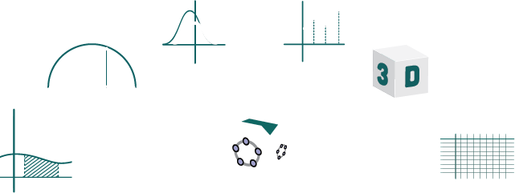

<!doctype html>
<html lang="de">

	<head>
		<meta charset="utf-8">
        <meta name="apple-mobile-web-app-capable" content="yes">
		<title>Animationen erstellen</title>

		<meta name="description" content="TODO">
		<meta name="author" content="Martin Guggisberg">

		<meta name="apple-mobile-web-app-capable" content="yes" />
		<meta name="apple-mobile-web-app-status-bar-style" content="black-translucent" />

		<meta name="viewport" content="width=device-width, initial-scale=1.0, maximum-scale=1.0, user-scalable=no">

		<!-- change to https -->
		<script>
			if (window.location.host.indexOf('github.io') > -1 && window.location.protocol != "https:"){
    			window.location.protocol = "https";
			}
		</script>

		 <link rel="shortcut icon" type="image/x-icon" href="favicon.ico" />
    	<link rel="stylesheet" href="https://mgje.github.io/geogebra/reveal2020/dist/reveal.css">
    	<!-- <link rel="stylesheet" href="https://mgje.github.io/geogebra/reveal2020/dist/theme/league.css" id="theme"> -->
    	<link rel="stylesheet" href="https://mgje.github.io/geogebra/reveal2020/dist/theme/night.css" id="theme">


    <!-- Code syntax highlighting -->
    <link rel="stylesheet" href="https://mgje.github.io/geogebra/reveal2020/plugin/highlight/monokai.css">


		<!--[if lt IE 9]>
		<script src="https://mgje.github.io/presentations/reveal2015/lib/js/html5shiv.js"></script>
		<![endif]-->
	</head>

	<body>

		<div class="reveal">

<!-- Any section element inside of this container is displayed as a slide -->
<div class="slides">
				
<!-- Einleitung -->
<section data-markdown data-separator="---" data-separator-vertical="--" >
<script type="text/template">
<h3>Animationen erstellen</h3>

mit Hilfe von GeoGebra
<br>
<p style="background-color:#81BABE">

</p>

Martin Guggisberg (c) 2020


---
## Geogebra Institute 

### PH FHNW Schweiz

[https://www.geogebra.org/institutes](https://www.geogebra.org/institutes)


---
## Agenda

<br>
<br>


1. Open Source Software Geogebra 
1. Tutorial I: Animation erstellen
1. Beispiele von GeoGebraTube
1. Tutorial II: Rosenkurven (Rosette)
1. Bonus Track
	- Piratenaufgabe
	- Parallax Effekte

---

# Geogebra

---


# Geogebra

- Beginn der Entwicklung: 2001 
- Markus Hohenwarter, Universität Salzburg
- Zunächst: 
	- Algebra 
	- Geometrie
- Erweitert durch
	- Computeralgebrasystem
	- Tabellenkalkulation
	- 3D-Geometrie
	- Statistik


---

#### [https://www.geogebra.org/](https://www.geogebra.org/)


---

### Geogebra installieren


[https://www.geogebra.org/download](https://www.geogebra.org/download)
---
# Version 5 

- CAS neue Version
- 3D
- Zusammenspiel mit GeoGebraTube
- Unterschied Mobile und Desktop

---
# Version 6

- Neues Benutzerinterface
- Gleichungseditor
- Neues 3D Rendering

---

### Direkt im Browser arbeiten


[https://www.geogebra.org](https://www.geogebra.org)


---

Geogebra Materialien direkt nutzen


---

## Teilen oder Kopieren

Verwenden der Dateien, verändern der Dateien, Geogebra lernen.

Und schliesslich: selbst Teilen

--
### GeoGebra Gruppen

[www.geogebra.org/groups](https://www.geogebra.org/groups) bietet Ihnen einen einfachen Weg um bestehenden Gruppen beizutreten.


---

### Lernvideos [YouTube Channel](https://www.youtube.com/watch?v=m_v9hKFlOpw)


--

### Neuigkeiten zu GeoGebra

Twitter: [@geogebra](https://twitter.com/geogebra)


---

# Animation

# Bewegung

---
### 1. Beispiel: 


<br>

### Was ist $\pi$ ?


<br>

Demo: [https://www.geogebra.org/m/MW8GUjjQ](https://www.geogebra.org/m/MW8GUjjQ)
---

# Animation 

# selbst erstellen

---
### Bild entlang einer Kurve bewegen

1. Bild einfügen

- Kurve defineren

- Beweglicher Punkt auf der Kurve festlegen

- Bild mit beweglichen Punkt verknüpfen

- Im Internet teilen
---

### Bild einfügen


---

### Bild mit Drag u Drop importieren


---

### Kurve definieren

$x \mapsto \sin(x)$


---

### Beweglicher Punkt auf der Kurve


---
### Bild mit beweglichen Punkt verknüpfen


---

<video width="1012" height="720" data-autoplay controls>
	    <source data-src="media/movies/grumpy.m4v" type="video/mp4" />
	    <source data-src="media/movies/grumpy.webm" type="video/webm" />
		Your browser does not support the <code>video</code> element.
</video>

[https://tube.geogebra.org/material/show/id/1329899](https://tube.geogebra.org/material/show/id/1329899)
---

<video  data-autoplay controls>
	    <source data-src="media/movies/grumpycat.m4v" type="video/mp4" />
	    <source data-src="media/movies/grumpycat.webm" type="video/webm" />
		Your browser does not support the <code>video</code> element.
</video>

---
# Beispiele aus der 

# Kinematik

Bewegung eines Massenpunkts
---
## Animieren von einfachen Bewegungen

- Freier Fall ohne Reibung [Link](https://tube.geogebra.org/material/show/id/122795)
- Angry Bird Physik [Link](https://tube.geogebra.org/material/show/id/147050)


---
### Animations Beispiele

* [Kochkurve](https://tube.geogebra.org/m/35989)
* [Kreisanimation](https://tube.geogebra.org/m/67982)
* [Euler Spirale](https://tube.geogebra.org/m/59746), [Euler Spirale 2](https://tube.geogebra.org/m/59768)
* [Kreissektoren wild](https://tube.geogebra.org/m/84754)
* [Gelenkanimation](https://tube.geogebra.org/m/693273)
* [Fünfeck Spirale](https://tube.geogebra.org/m/84748)
* [Sechseck Spirale](https://tube.geogebra.org/m/84744)
* [Beweis Pythagoras](https://tube.geogebra.org/m/8299)
* [Kollektiv Bewegungen](https://tube.geogebra.org/m/619265)
* [Zweispalt Experiment](https://tube.geogebra.org/m/59307)
* [Springender Ball](https://tube.geogebra.org/m/142)
--
### Math Perlen
* [http://www.mathrecreation.com/](http://www.mathrecreation.com/)
* [TED Symmetry](http://www.ted.com/talks/marcus_du_sautoy_symmetry_reality_s_riddle.html)
---
### Animaiton einer Rose


[Web Tutorial (engl)](http://mathandmultimedia.com/2010/09/10/geogebra-tutorial-29-animation-roses-radian/)
---

### Animationsplan

1. Erstellen eines äusseren Kreises
2. Ein Punkt B läuft auf dem äusseren Kreis
3. s sei die Strecke vom Zentrum zu B
4. Erstelle einen inneren Kreis 
5. Schneide den Kreis mit der Strecke
6. Verändere den Radius des inneren Kreises
7. Zeichne die Spur des Schnittpunktes


---
### Nullpunkt / Zentrum festlegen

* Mit Punktwerkzeug auf den Achssenschnittpunkt klicken

* oder die Koordinaten 

```ocaml
(0,0)
```

in der Eigabezeile eintragen

---
### Kreis mit Radius 1 um A

Eingabe:

```ocaml
Kreis[A, 1]
```


### Punkt B bei (1,0)

Eingabe: 

```ocaml
B = (1,0)
```


---

Punkt B rotieren um d°

Eingabe: 

```ocaml
Drehe[B, d, A]
```

Strecke AB'

Eingabe: 

```ocaml
Strecke[A, B']
```


zweiter Kreis


Eingabe: 

```ocaml
Kreis[A, r]
```
---
### Einstellungen Schieberegler anpassen


schneiden

---

Eingabe: 

```ocaml
Schneide[e, a]
```

---

#### Spur einschalten und Animation Starten

[https://www.geogebra.org/material/show/id/1333815]](https://www.geogebra.org/material/show/id/1333815)


---


$$ r = \cos(\phi \cdot n/d ) $$

[https://www.geogebra.org/material/show/id/118656](https://www.geogebra.org/material/show/id/118656)


---

#  Vielen Dank

- Bonus Track
	- Piratenaufgabe
	- Parallax Effekte
	- Wo ist der beste Ort ... ?

---

#Piraten-
#aufgabe

---


---


[Link auf GeoGebraTube](https://tube.geogebra.org/material/show/id/268433)
---
## Bewegungen simulieren


x,y-Position als Funktion von t


```ocaml
t = 0.0
P = (t,sin(t))
```
---

<video width="980" height="470" data-autoplay controls>
        <source data-src="media/movies/bewegterpunkt.m4v" type="video/mp4" />
        <source data-src="media/movies/bewegterpunkt.webm" type="video/webm" />
        Your browser does not support the <code>video</code> element.
</video>

---

### Gekoppelte Kreisbewegungen

\\( \vec{P}(t) = \begin{pmatrix} r\_1 \cdot \cos(t)  \\\\ r\_1 \cdot \sin(t)  \end{pmatrix} \\)


\\( \vec{Q}(t) = \begin{pmatrix} x(P) \cdot r\_2 \cdot \cos(v\_{rel} \cdot t)  \\\\y(P) \cdot r\_2 \cdot \sin(v\_{rel} \cdot t)  \end{pmatrix} \\)


---
### Gekoppelte Kreisbewegungen


[https://www.geogebra.org/m/UMsm3B9d](https://www.geogebra.org/m/UMsm3B9d)

---
## Zentralprojektion 
###& 
##Parallax Effekte
---
## Parallax Effekte (Werbung)
<video width="1280" height="720" data-autoplay controls>
	    <source data-src="https://mgje.github.io/presentations/Budapest2014/media/movies/Parallaxe.mp4" type="video/mp4" />
	    <source data-src="https://mgje.github.io/presentations/Budapest2014/media/movies/Parallaxe.webm" type="video/webm" />
		Your browser does not support the <code>video</code> element.
</video>
---

Modellierung eines perspektivischen

Abbildungssystems mit 


---


[Link](http://www.uh.edu/engines/epi138.htm)
Mechanical creation of a perspective image by Albrecht Dürer

---
### perspektivische Abbildung <small> Quader auf Ebene</small>
<video width="1012" height="720" data-autoplay controls>
	    <source data-src="https://mgje.github.io/LinAlg/slides/media/movies/ZentralprojektionBox.m4v" type="video/mp4" />
	    <source data-src="https://mgje.github.io/LinAlg/slides/media/movies/ZentralprojektionBox.webm" type="video/webm" />
		Your browser does not support the <code>video</code> element.
</video>
---
### Zentralprojektion <small>auf Ebene normal zur Z-Achse mit Brennweite f</small>
<video width="1012" height="720" data-autoplay controls>
	    <source src="https://mgje.github.io/LinAlg/slides/media/movies/Zentralprojektion_Tetraeder.m4v" type="video/mp4" />
	    <source src="https://mgje.github.io/LinAlg/slides/
	    media/movies/Zentralprojektion_Tetraeder.webm" type="video/webm" />
		Your browser does not support the <code>video</code> element.
</video>

---
### Zentralprojektion 


[Link auf GeoGebraTube](https://www.geogebra.org/m/tDn28cmU)

---
## Zentralprojektion im Kino


---
### Ausschnitt Mission Impossible 4
<video width="960" height="540" data-autoplay controls>
	    <source src="https://mgje.github.io/presentations/Budapest2014/media/movies/MIP2.m4v" type="video/mp4" />
	    <source src="https://mgje.github.io/presentations/Budapest2014/media/movies/MIP.webm" type="video/webm" />
	    <source src="https://mgje.github.io/presentations/Budapest2014/media/movies/MIP.ogv" type="video/ogg" />
		Your browser does not support the <code>video</code> element.
</video>
---


[Link GeoGebraTube](https://tube.geogebra.org/material/show/id/120897)
</script>
</section>


<!-- THE END -->
			</div>

		</div>

   <!--  <script src="https://mgje.github.io/geogebra/reveal2020/lib/js/head.min.js"></script> -->
    <script src="https://mgje.github.io/geogebra/reveal2020/dist/reveal.js"></script>
    <script src="https://mgje.github.io/geogebra/reveal2020/plugin/zoom/zoom.js"></script>
		<script src="https://mgje.github.io/geogebra/reveal2020/plugin/notes/notes.js"></script>
		<script src="https://mgje.github.io/geogebra/reveal2020/plugin/search/search.js"></script>
		<script src="https://mgje.github.io/geogebra/reveal2020/plugin/markdown/markdown.js"></script>
		<script src="https://mgje.github.io/geogebra/reveal2020/plugin/highlight/highlight.js"></script>
		<script src="https://mgje.github.io/geogebra/reveal2020/plugin/math/math.js"></script>

		<script>

			// Also available as an ES module, see:
			// https://revealjs.com/initialization/
			Reveal.initialize({
				controls: true,
				progress: true,
				center: true,
				hash: true,
				slideNumber: true,
				showNotes: true,

				// Learn about plugins: https://revealjs.com/plugins/
				math: {
      			mathjax: 'https://cdn.jsdelivr.net/gh/mathjax/mathjax@2.7.8/MathJax.js',
      				config: 'TeX-AMS_HTML-full',
      			// pass other options into `MathJax.Hub.Config()`
      				TeX: { Macros: { RR: "{\\bf R}" } }
    			},
				plugins: [ RevealZoom, RevealNotes, RevealSearch, RevealMarkdown, RevealHighlight,RevealMath]
			});

		</script>

	</body>
</html>
